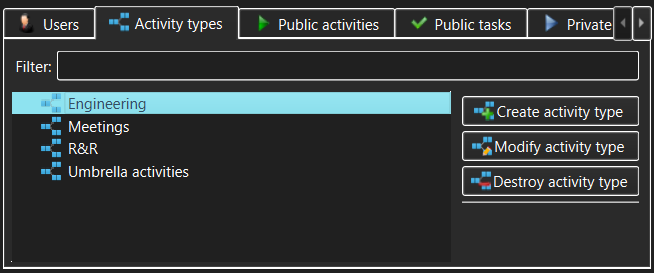

Activity Types view
The Activity Types view allows management of Activity Types (subject to access
permissions granted after login).

The controls in the Activity Types view allow the user to access:
- Activity types list - this displays the list of
available Activity Types. All Activity Types are always visible to all
users.
- Filter - type anything here to narrow the set of
displayed Activity Types or to quickly find a specific Activity Type. The
filter match can appear anywhere within the Activity Type name.
- Create activity type - use this button to create a new
Activity Type.
This will only be permitted to someone with Administrator or Manage Activity
Types
capability and will be disallowed in a read-only workspace.
- View/Modify activity type - use this button to view or modify
the Activity Type currently selected in the Activity Types list. The meaning of this
button (view or modify) will be determined by whether the current user has
logged in with Administrator or Manage Activity Types capability and whether or not
the workspace is read-only.
- Destroy activity type - use this button to permanently destroy
the Activity Type currently selected in the Activity Types list. You will be asked to
confirm the destruction, as this is a dangerous operation in that it also
affects all Work items and Events logged against the Activities of that
Type. Although the Activities themselves remain intact, the historical
perspective will still be altered as these Activities will no longer be
attributed to their respective Activity Type. The destroy confirmation
dialog that pops up will show just how much the recorded work history will be
impacted.
As well as action buttons, the Activity Types list allows invoking the same
actions (create, modify or destroy Activity Type) via the context menus that pop
up when the Activity Types list items are right-clicked.
See also:
Create/Modify Activity Type dialog,
Destroy
Activity Type dialog